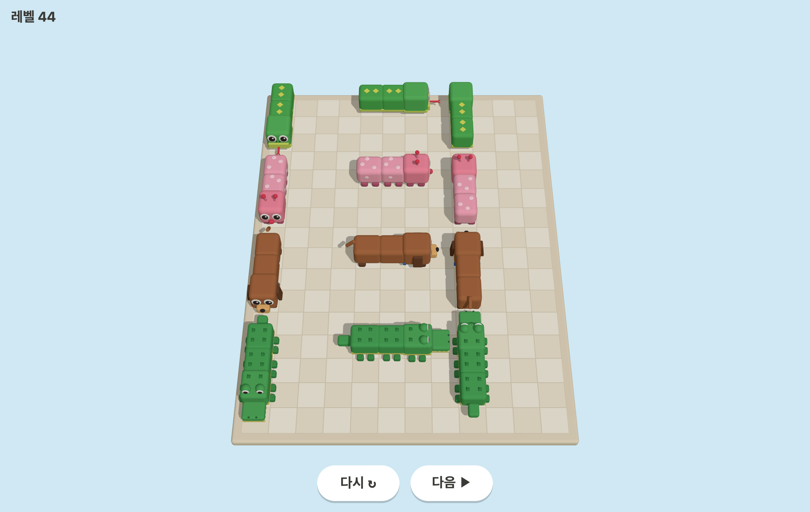
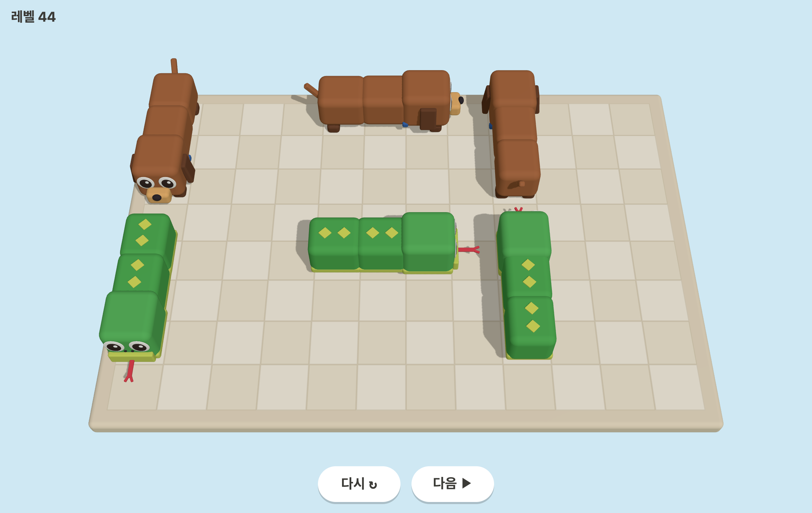
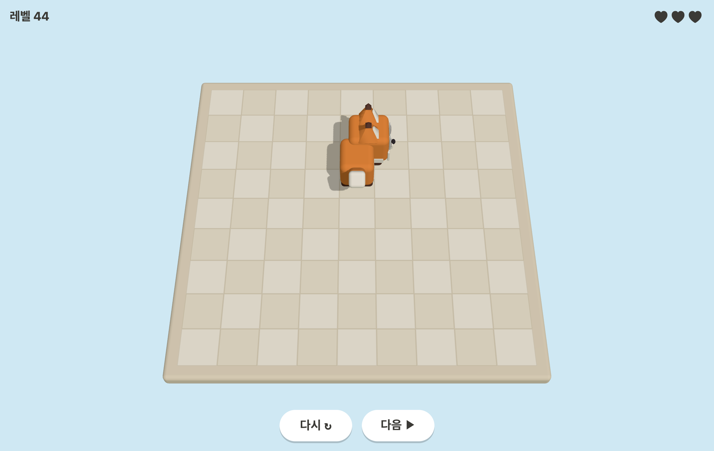
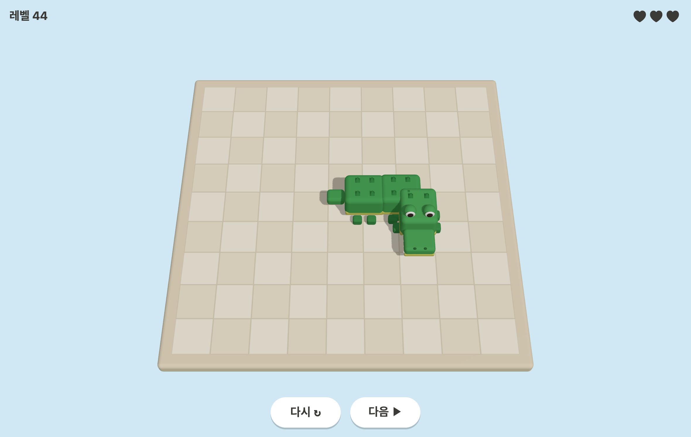

Reference 09 (size classes) | Reference 01 / 02 (front / back)
1 cell — columns: front (down), side (right), back (up)
2 cells — cow, pig
2 cells — fox, tiger, husky
3 cells — snake, caterpillar, dachshund, crocodile


Corners — fox (up→right), crocodile (right→down)

